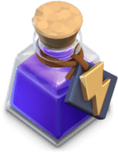
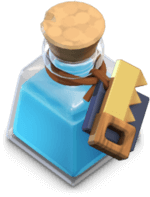

Witaj!
Pierwsza rada: Wydawaj gemy tylko na dodatkowych budowniczych!
Albowiem lepiej je wydać na kolejnego budownicznego. Dzięki niemu szybciej wybudujesz swoją bazę.
Pierwsza rada: Wydawaj gemy tylko na dodatkowych budowniczych!
Albowiem lepiej je wydać na kolejnego budownicznego. Dzięki niemu szybciej wybudujesz swoją bazę.
W samouczku nie wykorzystuj wszytkich czarodziejów. Dzięki temu będziesz miał ich na kolejną walkę.
Dostaniesz tarczę(chroni cię ona przed atakami przez 24h). Więc jak braknie ci suroców do budowy, to nie atakuj odrazu na graczy, bo wtedy stracisz tarczę. A bez niej ludzie będą mogli cię atakować, przez co stracisz surowce.
Zamiast tego zaatakuj na goblin i ucz się podstaw gry.
Wybuduj wszytko co masz dostępne i ulepsz do najwyższego poziomu jaki masz, a na końcu ulepsz Town Hall na 3 poziom.
Wejdź na tą zakładkę, jeśli nie wiesz co robią poszeczególne budowle i postacie: Spis treściNa tym poziomie będziesz mógł łatwiej i szybciej edytować swoją bazę, dzięki ikonce ręki na prawym dolnej krawędzi ekranu.
Polecam na start ulepszyć kopalnie i wydobywanie eliksyru, aby zdobywać więcej surowców.
Jak wybudujesz go, to dostaniesz na pewny okres czasu boosty, wykorzystaj je.
Na tym poziomie będziesz mógł kopiować gotowe bazy z neta i wklejać je do siebie.
Dochodzi wtedy Clan Castle, dzięki niemu możesz dołączyć do klanu, gdzie bedą ci pomagać i ty im. Będziesz dostawał postacie do obrony swojej bazy ale możesz je także wykorzsytać do ataku(treasure ---> to prośba o nie).
Ulepszasz wszytko i rada: przed wyjściem z gry ustaw, aby armia ci się budowała, dzięki czemu jak powrócisz do gry po pewnym czasie będzie już gotowa do ataku. Do ataków polecam ballony i zap-y.
Pamiętaj o ulepszaniu murów!
Rób wyzwania klanowe aby otrzymać fajne nagrody i wzmacniąć klan. Jeśli zdobędziesz 4000punktów to będziesz mógł wybrać dodatkową nagrodę.
No i ulepszaj wszytko po kolei.
Rób zadania przepustki, ponieważ daje ona wiele przydatnych rzeczy.
Na tym poziomie zdobędziesz swojego pierwszego bohatera(Barbarian King), postaraj się jak najszybciej go ulepszyć na 5 poziom, dzięki czemu dostaniesz jego specjalną umiejętność.
Polecam do ataków używać smoków oraz ciekawostki: jeśli przeciwnik cię zaatakuje, to jak ci zniszczy kopalnie lub elixir colector to kradnie 50% wyprodukowanego surowca przez tą maszynę, a z dark elixir drill kradnie aż 75% ORAZ level respionych przez barbarian king-a barbarzyńców jest taki sam jaki masz w laboratorium(Więc je ulepszaj).
Budowa: Dark eliksir > Champion > Kopalnie i eliksyrów > Army Champ i laboratorium i spell factory > Obrona(Air defence > Archer Tower > reszta) > Mur > Pułapki
Odblokowujesz wtedy tradera, który będzie ci sprzedawać potki, wykorzsytaj je!
Porada taktyczna: Wyciągaj z clan castle obrońców np. postaw barbarzyńce, i jak oni wyjdą to postaw jakiegoś tanka ,który przyjmie obrażęnia, a za nim postawcie np.czarodziejów, które zabiją obrońców lub postaw np. czarodziejów wokól obrońcy. Bez niego zaatakowanie bazy jest dużo łatwiejsze.
Budowa: Dark Elixir > Barbarian King > Clan Castle > Obrona(Air defence > Bomb Tower > Archer Tower) > (To co chcesz ulepszyć np. barack na pekkę i valkyrie i inne) > Pamiętaj o tesli ona jest op > reszta > Mury
Odblokowujesz swojego drugiego championa(Archen Queen) i tak samo postaraj się ulepszyć ją do poziomu 5 oraz archerki w laboratorium.
Zamiast walczyć multiplayer, skup się na walkach practice, dają one dużo łupów i uczą taktyki.
Porada taktyczna: Postaw Archer Queen, a za nią minnimumm 5 aniołow oraz rzuć spell fioletowy(Rage spell). Dzięki temu rozwalisz połowe bazy przeciwnika niskim kosztem.(Postawiaj ją mądrze! )
Budowa: Dark Eliksir > Archer Quenn! i Barbarian King > X-bow > Clan Castle > Army Champ i Laboratory i Spell Factory > Obrona(Air Defense > Bomb Tower > Swiper) > Tesla > reszta > Pułapki > Mury
Jest to mój ulubiony town hall i siedziałem w nim rok :)
Dochodzi maszyna oblężnicza i inferno tower, które są bardzo przydatne. Dodam że smoki bedą op do ataków jak i obrony.
To czas aby rozpocząć przygotowania na 6 buildera, w nocnej bazie ulepsz Builder Hall na poziom 9(możesz zrashować), pózniej zbuduj O.T.T.O HUt, w między czasie ulepsz Batle Machine na 30 poziom oraz Cannon Cart na 18 poziom, Mega Tesla na 9 poziom, na głównej bazie przerób zwykłego cannon na podwójnego(aby to zrobić musisz mieć na obu wioskach jeden cannon na 4 poziomie) - mortara na potrójnego(a tu na 8 poziomie) - wieże na tą z niskim zasięgiem(tutaj 6 poziom)
Jak to zrobicie to budujecia na głownej wiosce budujecie Master Build Hall i macie.
Budowa: Inferno Tower > Laboratorium > Clan Castle > Army Camp > Obrona(X-bow > Air defense > Bomb Tower > Swiper > Tesla) > reszta i Barbarian King oraz Archen Queen > reszta Obrony > Pułpaki > Mury
Na tym poziomie będziesz mógł robić super żołnierzy. Dochodzi także nowy champion(Grand Wardern), Odblokowujesz także Eagly Artylery, ltóre szczela pociski z nieba na całą mapę.
Budowa: Eagly Artylery > Barack i Laboratorium > Barbarina King i Archer Queen i Grand Wardern > Army Champ > Clan Castle > Storages > Obrona(Inferno Tower > Air Defense > X-bow) > reszta > Mury
| Item | Nazwa | Max. ilość | Zastosowanie |
|---|---|---|---|
| Księga Walki | 1 | Natychmiast kończy ulepszenie w laboratorium. | |
| Księga Budownictwa | 1 | Natychmiast kończy ulepszanie lub budowę budynku. | |
| Księga Bohaterów | 1 | Natychmiast kończy ulepszanie bohatera lub zwierzaka. | |
| Księga Zaklęć | 1 | Natychmiast kończy ulepszanie mikstury. | |
| Księga wszystkiego | 1 | Natychmiast kończy ulepszanie danej rzeczy. | |
|  | Mikstura mocy | 5 | Zwiększa poziomy twoich oddziałów. |
| Mikstura surowców | 5 | Przyspiesza produkcję surowców. | |
| Mikstura Treningowa | 5 | Przyspiesza tempo szkolenia oddziałów. | |
|  | Mikstura Budowniczego | 5 | Przyspiesza pracę budowniczych. |
| Mikstura Wieży Zegarowej | 5 | Aktywuje wzmocnienie Wieży Zegarowej na 30 min. | |
 |
Mikstura bohatera | 5 | Wszyscy bohaterowie i zwierzaki zyskują kilka poziomów więcej. |
| Mikstura badawcza | 5 | Przyspiesza pracę wewnątrz Laboratorium. | |
| Super Mikstura | 5 | Wzmacnia superoddział. | |
| Pierścień muru | 25 | Natychmiastowo ulepsza ścianę bez żadnych kosztów. | |
| Łopata | 5 | Pozwala przesunąć przeszkodę. | |
| Runa złota | 1 | Zapełnia wszystkie magazyny złota. | |
| Runa Eliksiru | 1 | Wypełnia wszystkie magazyny eliksiru. | |
| Runa Mrocznego Eliksiru | 1 | Wypełnia wszystkie magazyny Dark Elixir. | |
| Runa Budowniczego Złota | 1 | Wypełnia wszystkie magazyny Builder Gold. | |
| Runa eliksiru budowniczego | 1 | Wypełnia wszystkie magazyny Builder Elixir. | |
| Młot Walki | 1 | Natychmiastowo ulepsza dowolny oddział bez żadnych kosztów. | |
| Młot Budowy | 1 | Natychmiastowo ulepsza dowolny budynek bez żadnych kosztów. | |
| Młot Zaklęć | 1 | Natychmiastowo ulepsza każde zaklęcie bez żadnych kosztów. | |
| Młot Bohaterów | 1 | Natychmiastowo ulepsza dowolnego bohatera lub zwierzaka bez żadnych kosztów. |